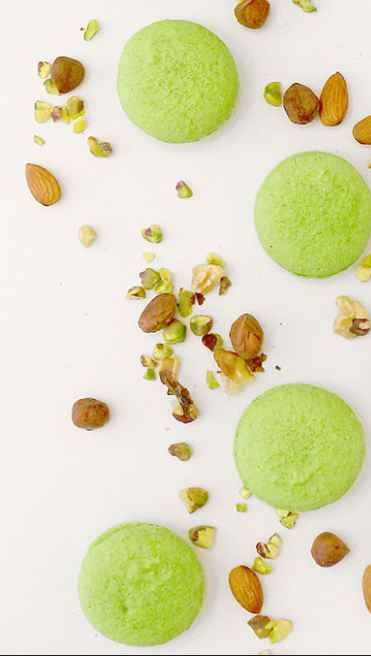
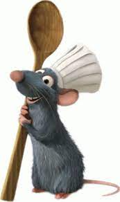

Sobre Touille

Somos una compañía que brinda servicios de catering Premium.
Cocinamos con pasión y creatividad como verdaderos artistas obteniendo sabores distintivos.
Brindamos servicio para todo tipo y tamaño de eventos que prioricen la calidad y el valor culinario.
Movemos nuestra estructura a cualquier sitio con logística propia eficiente para brindar un servicio de alto nivel en cualquier lugar de la Argentina
Remy

Empezo incursionando el mundo culinario cuando llego a Paris por el rio Sena.
Luego de abandonar el campo en el cual vivia se encontro llegando a la cocina de un restaurante con 2 estrellas michelin.
Desde ese momento estuvo ligado a la gastronomia por todo Europa.
Luego de un tiempo decidio abrir Touille, una empresa de catering gourmet.
Acá todos buscan y ponen lo mejor para encontrar la perfección absoluta, para que cada evento sea único.
Touille no es simple servicio de catering, es una pasión.